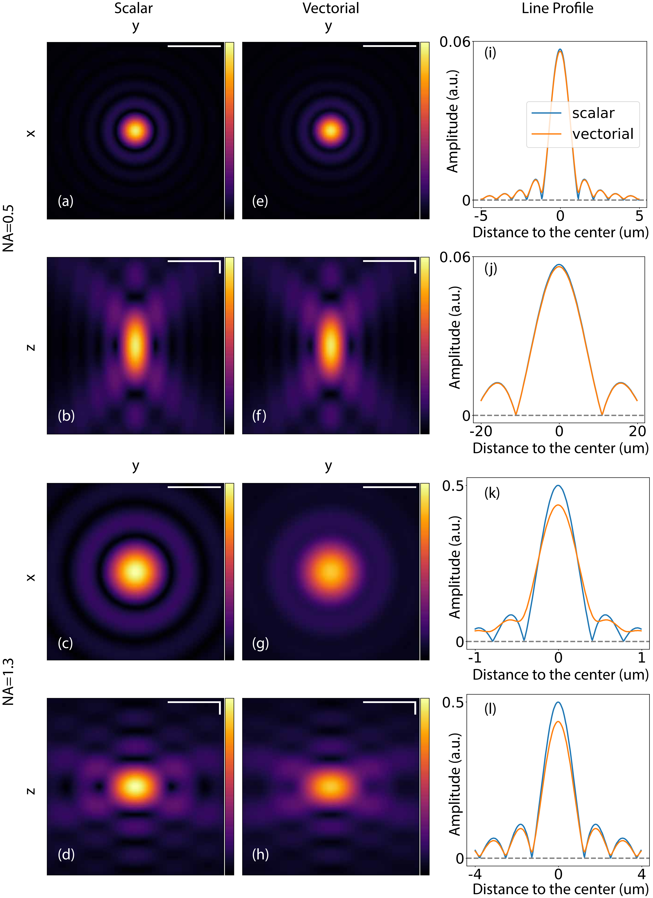
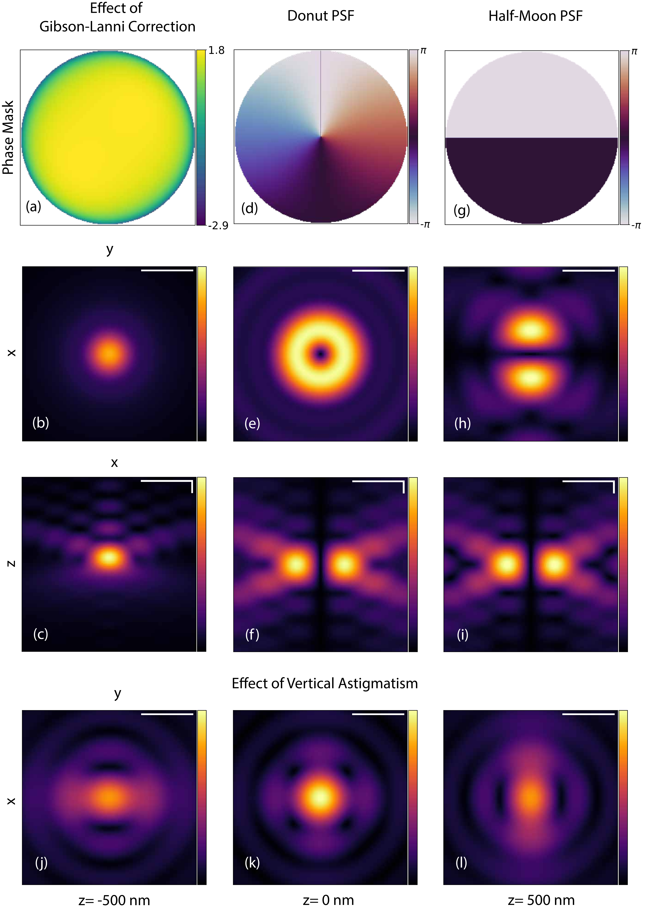
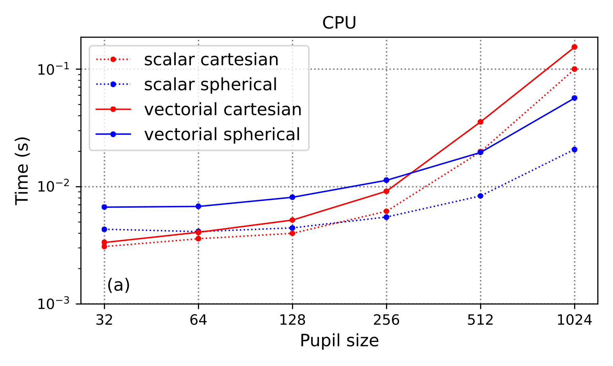
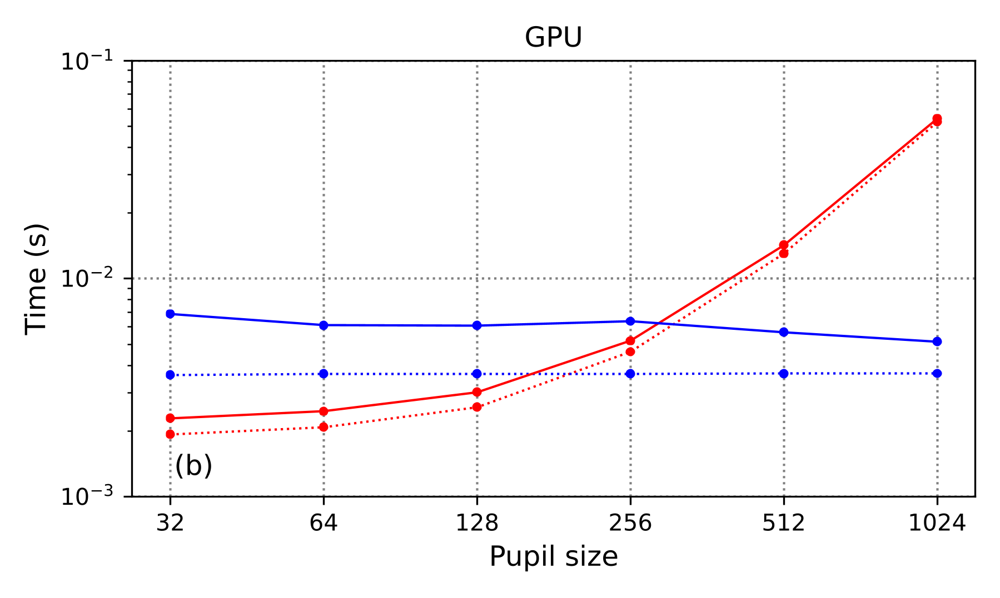
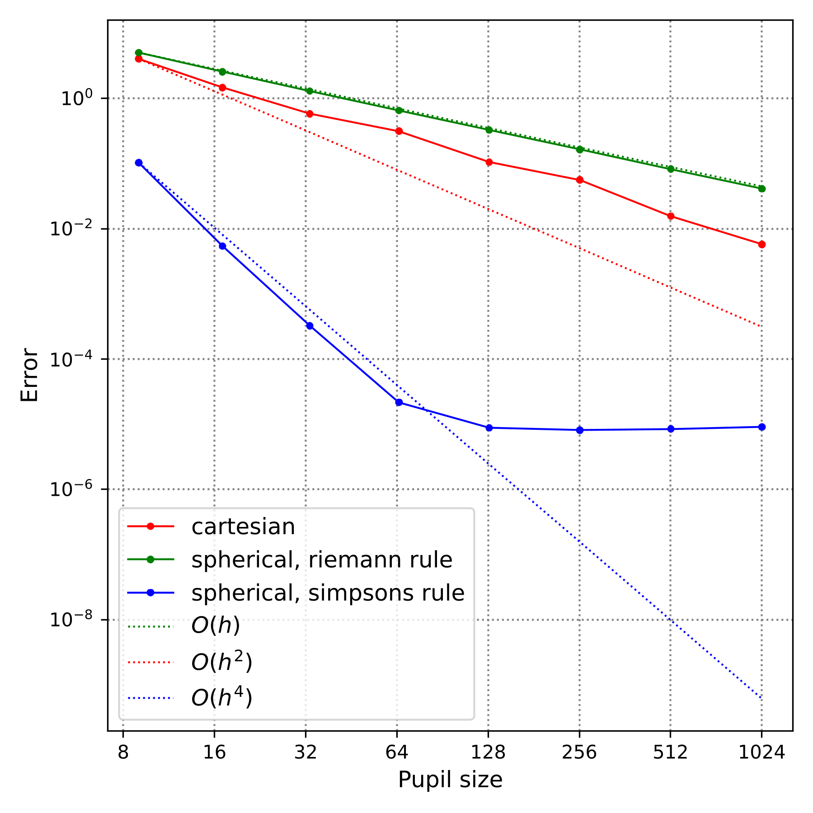

Results¶
PSF Gallery¶
We provide a gallery of PSFs to showcase our library in Fig. 57 and Fig. 58. We use a wavelength of 632 nm, circular polarization for the vectorial models, and we display the amplitude (in arbitrary units) of the beams for better contrast. The 2D slices of the same 3D beam share the same dynamic range. In Fig. 57, we present the focal electric field computed using both the scalar and vectorial propagators for objectives with different values of NA. In the low-NA case (top two rows), the resulting PSFs from both propagators are similar. The beams differ more from each other, as expected, in the high-NA case (bottom two rows): the rings are blurred out as the energy is spread into different components of the focus field.


Fig. 57 Unaberrated PSF generated by the scalar ((a)-(d)) and vectorial with circular polarization ((e)-(h)) Cartesian propagators, in the case of low-NA (0.5) (first two rows) and high-NA (1.3) (last two rows). (a), (e), (c), and (g): Slice of the \(x-y\) plane. (b), (f), (d), and (h): Slice of the \(z-y\) plane. (i)-(l): Intensity profiles along a vertical line through the center of the PSFs. The \(x\)-axis represents the relative distance to the center of the image in micrometers. Scale bars represent \(3\mu\)m and \(0.6\mu\)m in the low- and high- NA cases, respectively. For images of \(z-y\) planes ((b), (f), (d), and (h)), scale bars for the \(y\) and \(z\) axis are indicated by the horizontal and vertical bars, respectively.¶


Fig. 58 PSFs with different phase aberrations generated by the vectorial Cartesian propagator with high NA (1.3). ((a), (d), and (g)): Introduced phase masks at the pupil plane. ((b), (e), and (h)): Slice of the \(x-y\) plane at \(z=0\). ((c), (f), and (i)): Slice of the \(z-x\) plane at \(y=0\). ((j)-(l)): PSF with vertical astigmatism at three z-planes: at focus (k), 500 nm above (j), and below (l) focus. All PSFs were generated with circular polarization, except the Half-Moon PSF where x-axis linear polarization was used. The scale bars in all images represent \(0.6\mu\)m.¶
In Fig. 58, we present additional PSFs computed with the vectorial propagator in a high-NA setting. The impact of the Gibson-Lanni correction factor on a beam is shown in Fig. 58 (a)-(c). Key parameters are (c.f. Eq. (165)):
refractive indices: \(n_s=1.3\), \(n_i=1.5\), \(n_g=1.5\)
thicknesses: \(t_s=1\mu\)m, \(t_g=170\mu\)m, and \(t_i\) is computed using Eq. (166).
We observe that the spherical aberration it introduces degrades the quality of the focus. We also show the donut PSF, which has a vortex phase mask in the pupil plane, (Fig. 58 (d)-(f)) and the half-moon PSF, which has a \(\pi\)-jump in its pupil plane (Fig. 58 (g)-(i)). Finally, we demonstrate an example of arbitrary phase aberrations using the Zernike polynomials in Fig. 58 (j)-(l). Here, some amount of astigmatism is introduced, as is often done to encode defocus information [243], and we show the evolution of the beam shape along the \(z\)-axis.
Computational Performance¶
Speed Benchmark¶
We benchmark the runtime to compute a single \(201 \times 201\) 2D PSF image against the size of the pupil. The image is captured at focus, and all input parameters take default values in our library. We compare the runtime of all four propagators on CPU and GPU and show the results in Fig. 59. The benchmarking was performed on a machine with an Intel i9-10900X CPU and an NVIDIA GeForce RTX 3090 GPU.


Fig. 59 Speed benchmark. Time to generate a \(201 \times 201\) PSF for different numerical sizes of the pupil, for the different four propagators, on CPU (a) and GPU (b). Each data point in the plots is averaged over 10 runs.¶
We observe that the runtime of all propagators increases with the size of the pupil on CPU. The Cartesian propagators (red) are faster than the spherical ones (blue) on smaller sizes (<512 pixels) but slower on large sizes. This illustrates the difference in the computational complexity of each method. Scalar propagators (dotted) are faster than their vectorial counterparts (solid), by roughly 1.5 times for Cartesian and 3 times for spherical cases. On GPU, Cartesian propagators are faster than on CPU at the same grid size and the curves (red) behave similarly. Spherical propagators, however, exhibit a flat curve (blue) which indicates that they efficiently benefit from the GPU parallelization. The speed improvement between scalar and vectorial propagators is small, especially for the Cartesian case. Hence, vectorial propagators should be preferred over the scalar ones as the accuracy gain does not come at a high computational cost. Moreover, Cartesian propagators are recommended if one works with images of small sizes for both scalar and vectorial cases; while spherical propagators should be preferred for large sizes, especially when GPU is available.
Accuracy Benchmark¶
We benchmark the accuracy of both Cartesian and spherical scalar propagators with the analytic Airy disk for asymptotic limit (the Fourier transform of a perfect circular aperture):
where \(J_1\) is the Bessel function of the first order of the first kind. As the Airy disk is the Fourier transform of a perfect unit modulus circular aperture, an additional factor \(s_z = \cos\theta\) is introduced in Eq. (150) and Eq. (152). This corresponds to a paraxial approximation.
The spherical integral is computed using two numerical integration rules: the Riemann rule (a first-order method) and the Simpson’s rule (a fourth-order method). The error \(\delta\) is the \(L_2\)-norm of the difference between the output electric field \(E\) of the propagator and \(F_{\text{AD}}\), as in


Fig. 60 Accuracy benchmark of the Cartesian propagator (red) and the spherical propagator using the Riemann rule (green) and Simpsons’ rule (blue). \(h\) is the step size of integration.¶
We observe in Fig. 60 that the error decreases as the number of points in the integration domain increases in all cases. The spherical propagator has a linear convergence rate using the Riemann rule (green) and fourth-order convergence rate using Simpsons’ rule (blue), which correlates well with their expected accuracy. The Cartesian propagator, which is based on our custom FFT, shows a convergence rate between first and second order.